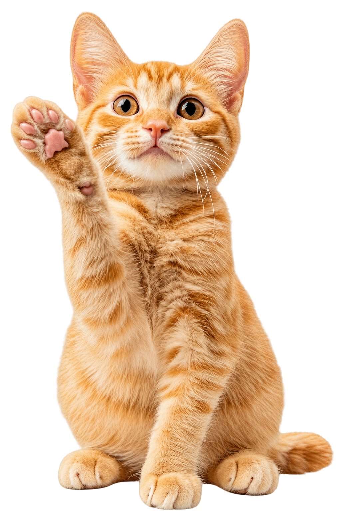
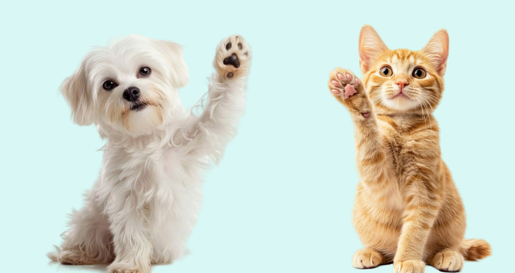

Free
0 ₽
Для первого шага
- Один профиль питомца
- До трёх рекомендаций кормов в месяц
- Короткое объяснение выбора
- Суточная норма в граммах
- Отметка «Покормил» и прогресс за день
- Базовый справочник пород
Для кошек и собак
NutriPate смотрит на вес, возраст и состав пачки, а потом говорит, сколько грамм положить в миску сегодня.


Внутри
После выбора корма NutriPate считает порцию, принимает отметку «Покормил» и собирает отчёт, который можно показать врачу.


Free
0 ₽
Pro
от 250 ₽ / месяц
NutriPate Pro
Выберите период и перейдите к оплате. Чек придёт на почту, и Pro откроется на телефоне, в Windows и в браузере, когда вы войдёте с этим адресом.
Уже работает
На iPhone, Android и компьютере можно пользоваться NutriPate без установки. Войдите по почте — питомец, дневник и Pro подтянутся на это устройство.
Открыть веб-версию
Скачивание
Сейчас
Работает в Safari, Chrome и на компьютере.
ОткрытьТелефон и компьютер
Приложения для телефона и компьютера пока недоступны. Пользуйтесь веб-версией.
Приложения для телефона и компьютера — в разработке.
О нас
NutriPate помогает у полки сопоставить состав корма с конкретным питомцем, а не с обещанием на лицевой стороне пачки.
О сервисе
Сервис помогает ориентироваться в кормлении, весе и дневнике питомца.
Оператор: индивидуальный предприниматель Шелепов Алексей Александрович
ИНН: 442400715765
ОГРНИП: 321762700020702
Адрес: 150025, г. Ярославль, ул. Авиаторов, д. 31
Обратная связь: NutriPate@yandex.ru